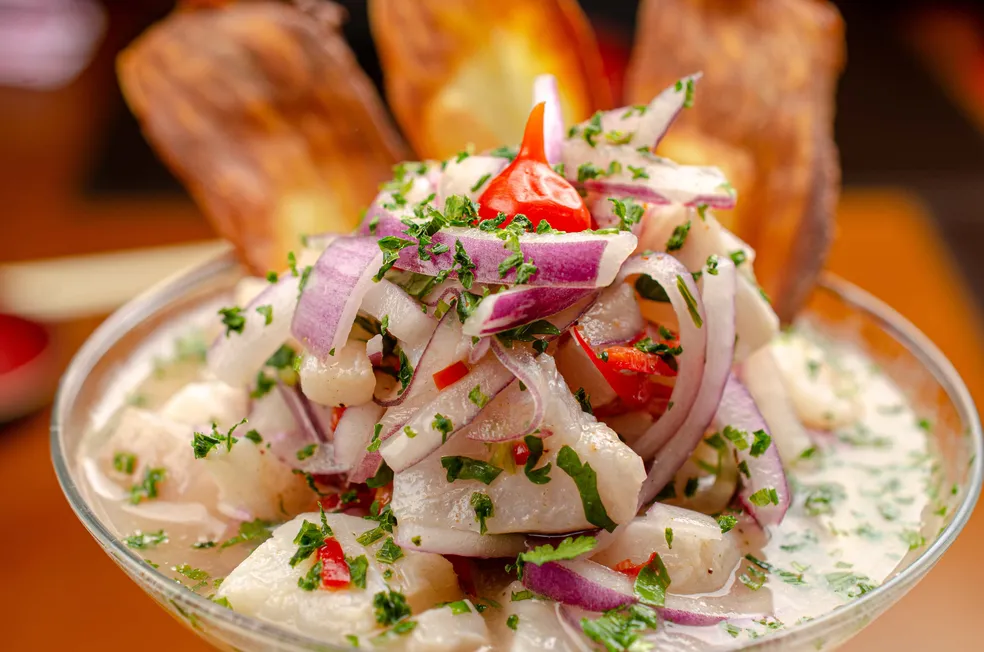

1. Step:Rinse the fish and place in a medium bowl.
2. Step:Pour lime juice over the fish; the fish should be completely immersed in lime juice.
3. Step:Cover and chill in the refrigerator, about 2 hours.
4. Step:Discard 1/3 of the lime juice from the bowl.
5. Step:Add celery, tomatoes, bell pepper, green onions, parsley, cilantro, olive oil, and black pepper; stir gently until combined.
6. Step:If you want put back in the refrigerator for 20 minutes, if you don't want to, you can already serve!